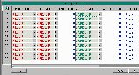

Full Detection
The Full Detection table controls the detection of, drawing for, and error messages for full conditions.
Full detection is designed to shut down upstream sections of conveyor if a full eye has been blocked for a preset amount of time. Typically, two timers are used in conjunction with photoeyes. The timers are generally termed full timer, tmPETX00F, and full clear timer, tmfcPE000F, and can be named after the photoeye. The full detection menu is used to configure the timers, to stop conveyance and to generate error messages. The timemenu pulls down directly from several fields of the full detection menu in order to select timers to be used. The timer name shows in either red or green. If the highlighted block is yellow, it has been forced manually.
Click Here to see a screen shot of this menu. 
The full timer shows red when not timing. When the photoeye becomes blocked, the full timer begins timing. The preset can be set to 5 seconds initially. The amount of time is based upon how long it takes the longest product to pass in front of the photoeye. These times can be easily adjusted in the field to the length necessary to coordinate smooth transitioning of the product. While timing, the timer shows red. If the timer times out, it becomes green. When the photoeye becomes unblocked, it will be reset to red.
The full clear timer, tmfc, is also green when it has finished timing. Initially set to 10 seconds, it begins timing when the photoeye becomes unblocked. It resets to red when the full timer times out. If the full clear timer is red, the lane is full.
The Full Detection menu contains the following fields:
Sensor Name - the part name of the sensor that detects the full condition. The sensor may be a photoeye, a contact from a machine, or another device.
Timer Name - the name of the timer used to declare the full condition
Timer Preset - the preset value for the full timer
Clr Timer Name - the name of the timer used to clear the full condition
Clr Timer Preset - the preset value for the clear timer
Error Name - the name of the error message in the System Error table to display on the Conveyor Status key when the full condition exists.
Conveyor Name - the part name of the conveyor to draw as full
Response IO - the part to unfire while the full condition exists
Invert - specifies whether to invert the I/O for the part (fire the part instead of unfiring it)
Go Until -a pull-down into the Conveyor Menu from which to select a sensor that will detect product present. This allows the motor to continue running until product is detected.
ReSound Horn - 'y' if the horn should sound every time conveyor starts after stopping for a full.
No Gap - value is always yes.
Click Here to return to the top of the page.
Copyright © 2001 Fortna Inc. All rights reserved.